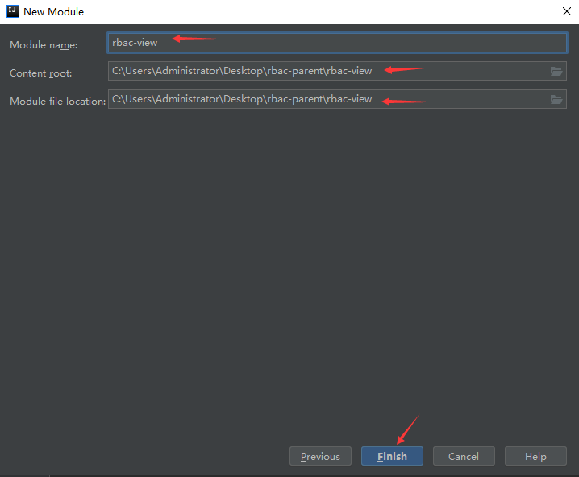
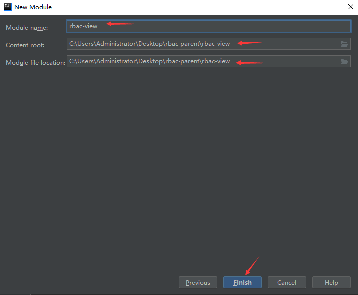

如何用idea来创建maven多模块项目
第一步：创建父工程，这是一个pom工程


第二步：将父工程中的src文件删除，并修改pom.xml文件

第三步：在父工程下创建子模块（公共common模块），这是一个jar工程


第四步：在父工程下创建子模块（后台管理admin模块），这是一个jar工程

第五步：在父工程下创建子模块（前台portal模块），这是一个jar工程
第六步：在父工程下创建子模块（显示view模块），这是一个war工程
 

以下是xml示例代码：
以下是mysql示例代码：
以下是java示例代码：